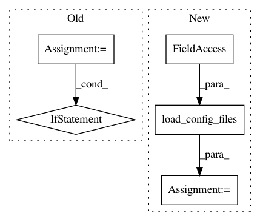

ca46c8871dd82aa61961008ff6c1261d21fca3c5,sos/__main__.py,,cmd_kill,#Any#Any#,496
Before Change
def cmd_kill(args, workflow_args):
from .sos_task import check_task, kill_task
from .monitor import summarizeExecution
status = check_task(args.task)
if status != "running":
if args.verbosity <= 1:
print(status)
else:
print(summarizeExecution(args.task, status=status))
else:
// FIXME: kill the job
kill_task(args.task)
if args.verbosity <= 1:
print("killed")
else:
print(summarizeExecution(args.task, status="killed"))
//
// command remove
//
def get_remove_parser(desc_only=False):
parser = argparse.ArgumentParser("remove",
description="""Remove specified files and directories and their
signatures (if available). Optionally, you can remove only
After Change
kill_tasks(args.tasks, args.verbosity)
else:
// remote host?
cfg = load_config_files(args.config)
env.sos_dict.set("CONFIG", cfg)
host = Host(args.queue)
print(host._host_agent.check_output("sos kill {} -v {}".format(" ".join(args.tasks), args.verbosity)))
In pattern: SUPERPATTERN
Frequency: 3
Non-data size: 5
Instances
Project Name: vatlab/SoS
Commit Name: ca46c8871dd82aa61961008ff6c1261d21fca3c5
Time: 2017-03-04
Author: ben.bog@gmail.com
File Name: sos/__main__.py
Class Name:
Method Name: cmd_kill
Project Name: vatlab/SoS
Commit Name: 127cbfc8da66f24a5c78d0ae681e46841cc59047
Time: 2017-07-08
Author: ben.bog@gmail.com
File Name: src/sos/__main__.py
Class Name:
Method Name: cmd_run
Project Name: vatlab/SoS
Commit Name: 8297e1ebda2083cf4357a6065bf6ffc9952a31aa
Time: 2017-05-06
Author: ben.bog@gmail.com
File Name: sos/__main__.py
Class Name:
Method Name: cmd_config